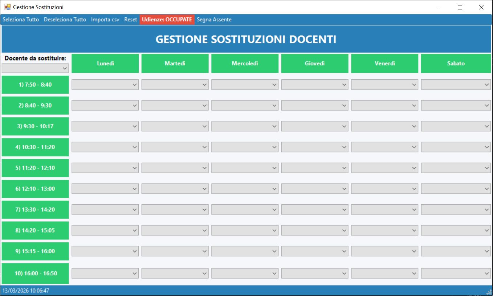
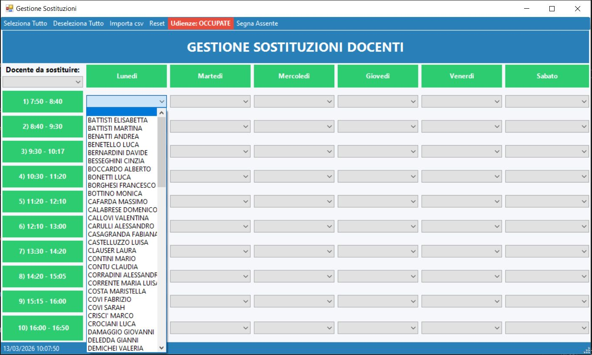
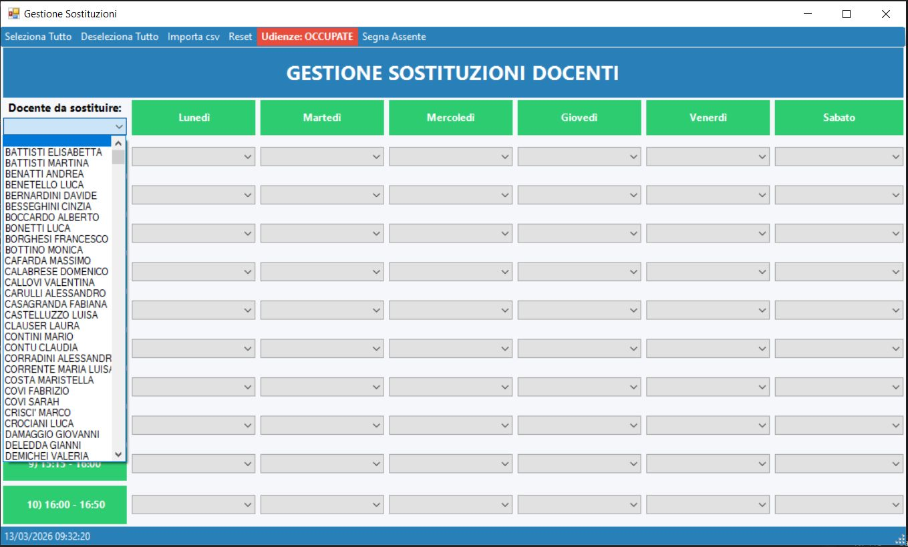

Perché Pilati SD?
Pilati SD è la soluzione pensata per aiutare le scuole a gestire facilmente le sostituzioni dei docenti in caso di assenze improvvise. È semplice, veloce e progettata per risolvere un problema reale.
Cosa fa l'app

Analisi automatica degli orari
Analizza gli orari dei docenti e mostra chi è libero in pochi secondi.

Priorità intelligente
Dai precedenza ai docenti già presenti nella classe da sostituire per continuità didattica.

Gestione rapida
Trova e assegna sostituzioni in pochi click, riducendo errori e tempi organizzativi.
Come funziona passo per passo
1. Inserisci l’assenza del docente.

2. Viene proposta una lista ottimale di docenti per la sostituzione.
3. Viene assegnato alla classe il docente più adatto alla sostituzione.

Un’esperienza formativa
Il nostro team dedicato garantisce una piattaforma affidabile e innovativa.